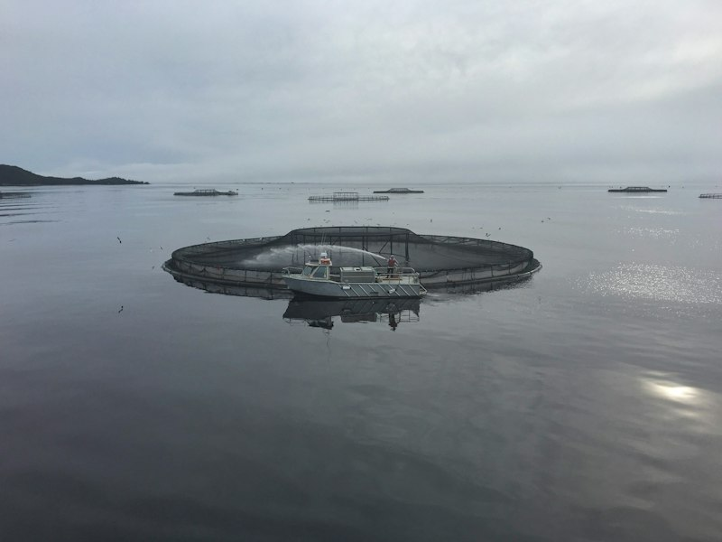
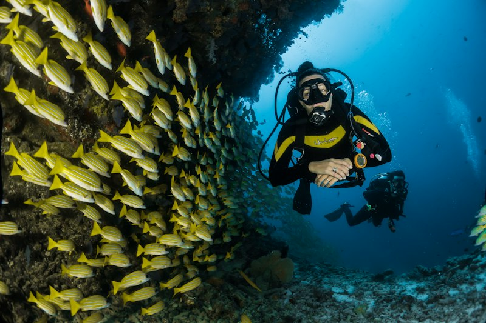
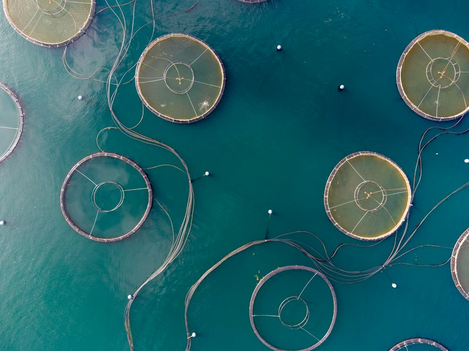
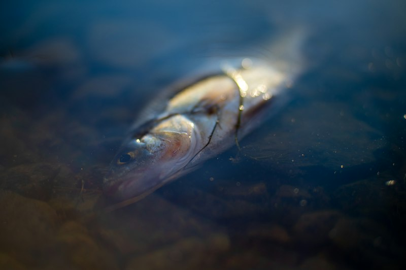
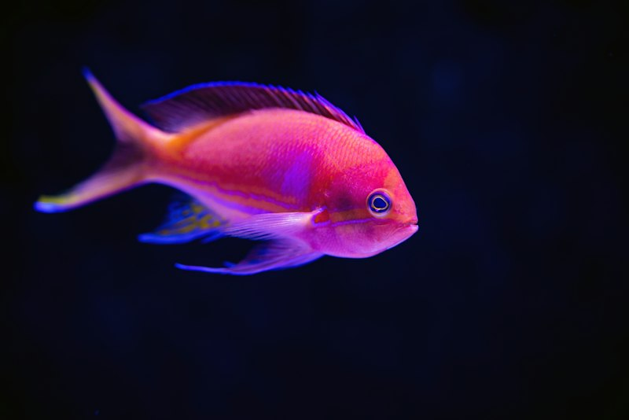
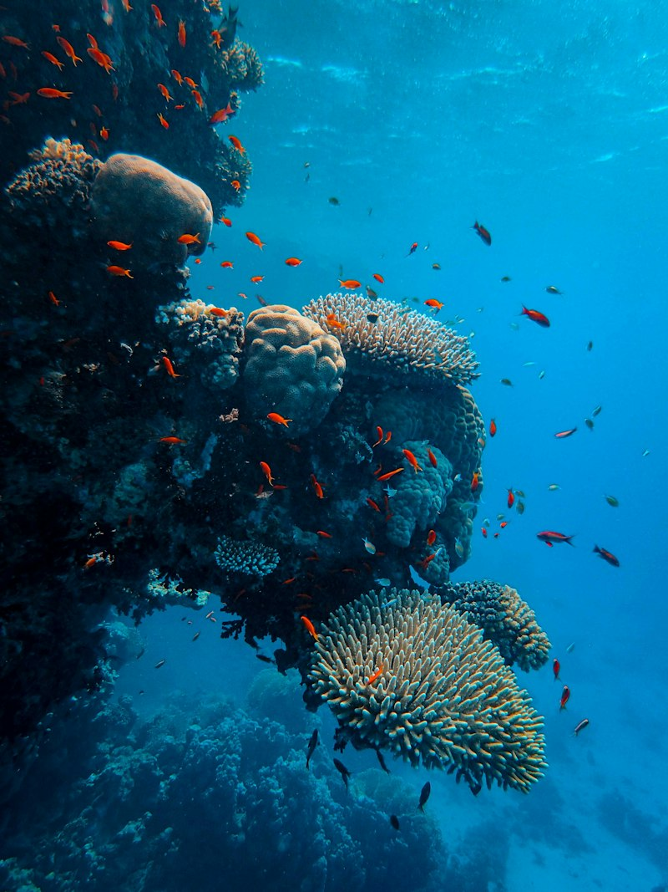
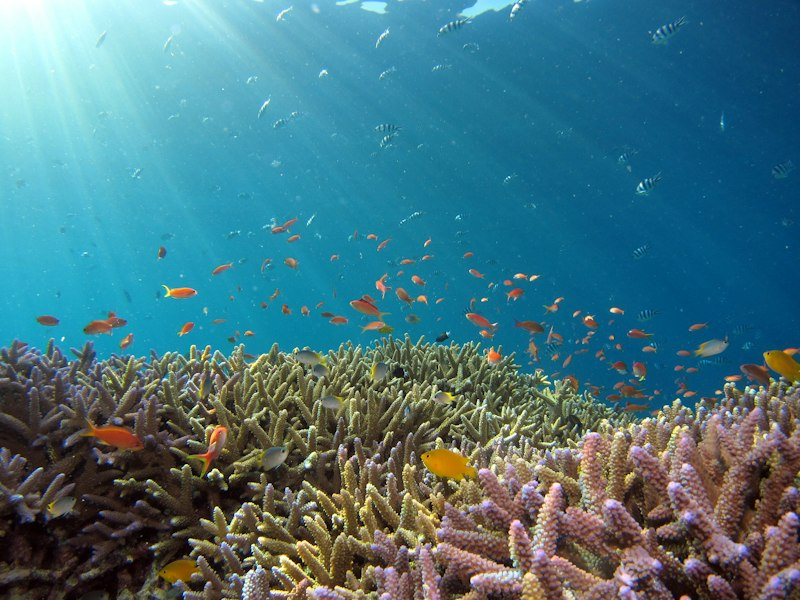
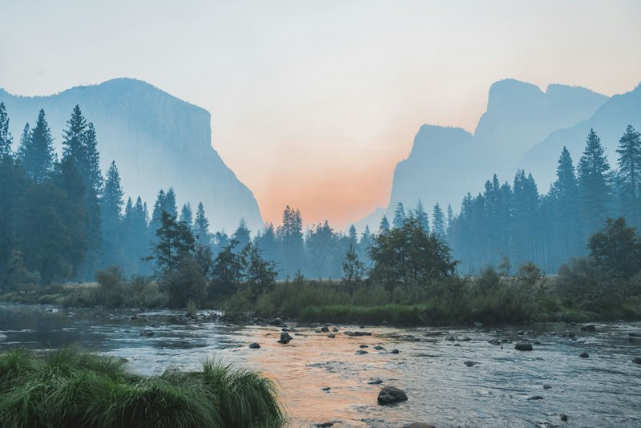

Water Watch
Continuous dissolved oxygen and temperature tracking.
Explore the people, modern pond ecosystems, and field practices behind productive, sustainable aquaculture across India.
A glimpse into high-density nursery systems, pristine pond aeration, field testing, and harvest days.













Aquaculture is an art of patience and precise biology. Our photo archive chronicles the daily commitment of farm hands, water engineers, and hatchery biologists who monitor water conditions from sunrise to sunset.
Continuous dissolved oxygen and temperature tracking.
Non-hormonal feeds formulated for clean water quality.
Closed-loop biological biofloc and probiotic balance.
Experience how AquaHarvest equipment integrates directly into active farming operations.

Temperature-controlled incubation and high-biomass fingerling rearing facilities.

Automated telemetry sensors feeding real-time dissolved oxygen alerts to mobile devices.

Gentle netting and oxygenated live-transport tanks preserving catch freshness.
We regularly visit and document successful farms across India using AquaHarvest solutions.